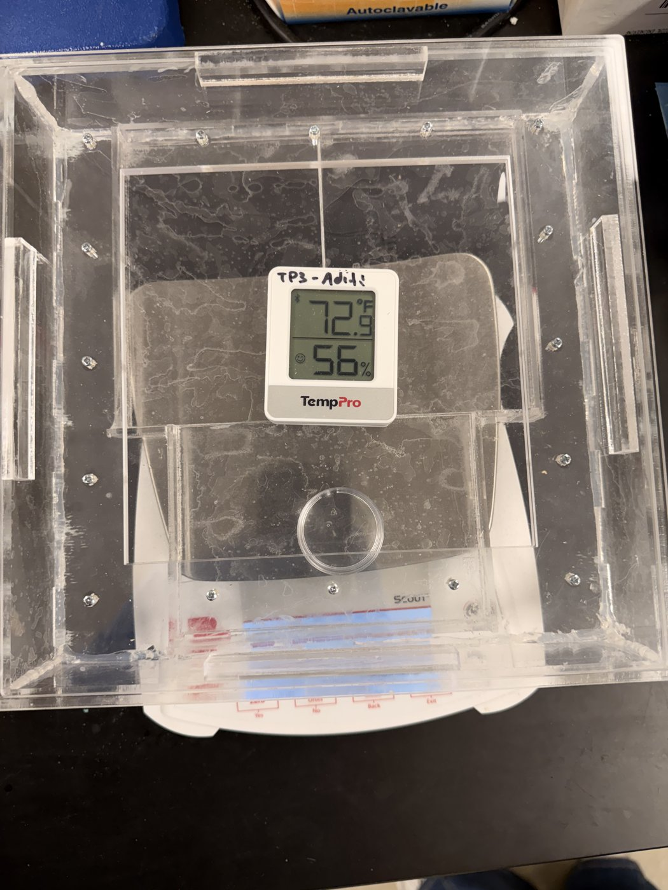
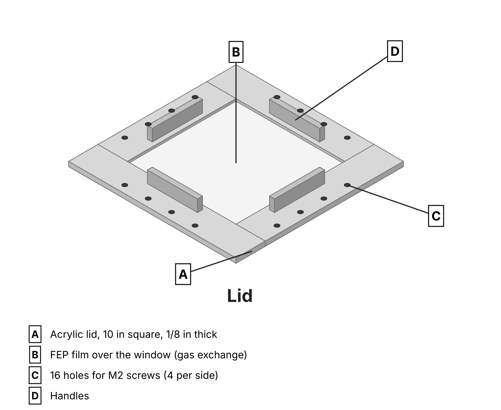

The problem
Cells grown on gels need a humid environment. At the same time, they need gas exchange, so the tray cannot simply be sealed shut. Our client's existing tray loses humidity over several days.
We needed a tray that keeps its humidity over several days while still letting gas pass through a filter.
Our prototype
The prototype is a tray that holds the cell plates and a water reservoir, covered by a lid with a window of FEP film. FEP lets gases pass while holding moisture in, which is the balance we need.


The parts
Clear acrylic with handles for lifting and 16 screw holes around a central window.
A thin film clamped over the window. It lets gas exchange happen, and it can be replaced.
Steel screws clamp the film and lid together, with heat inserts in the acrylic.
Holds the cell plates and a water reservoir that keeps the air inside humid.

Team
Bradley Koeller, Graham Snyder, Nainika Gupta, Aditi Shridhar, Dr. Ann Saterbak and Ananya Sridhar. Duke University EGR 101, working with Dr. Shoulars at the Carolinas Cord Blood Bank.